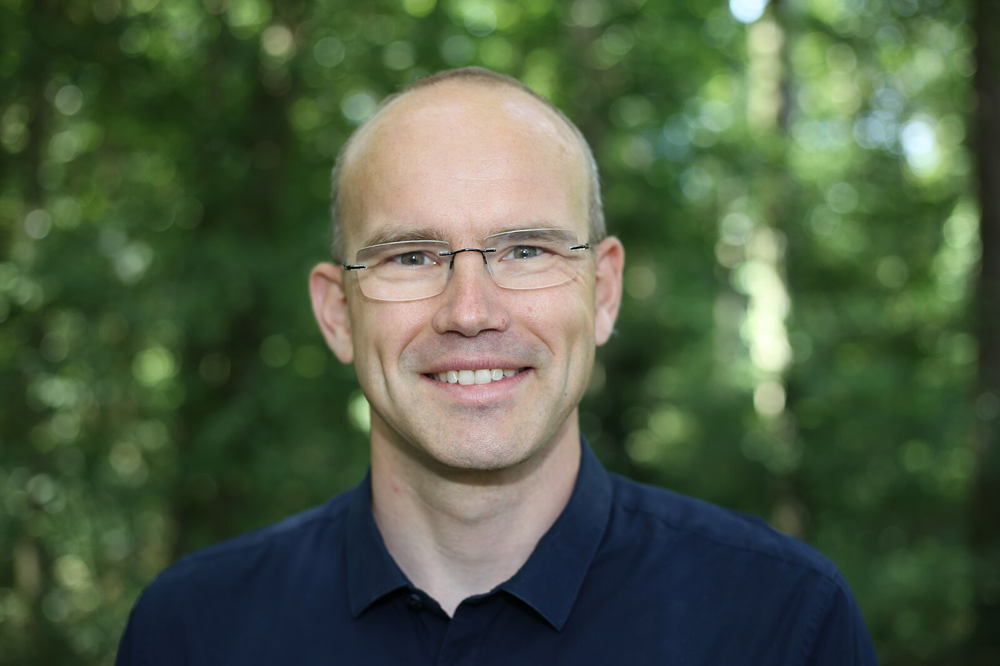

Program
Session 1 (09:00 - 10:30)*
Each paper has 15 minutes for presentation + 5 minutes of Q/A
- Welcome to the 5th Edition of the KGC Workshop.
- Not Everybody Speaks RDF: Knowledge Conversion between Different Data Representations. Mario Scrocca, Alessio Carenini, Marco Grassi, Marco Comerio, Irene Celino.
- BURPing Through RML Test Cases. Dylan Van Assche, Christophe Debruyne.
- Propagating Ontology Changes to Declarative Mappings in Construction of Knowledge Graphs. Diego Conde Herreros, David Chaves-Fraga, María Poveda-Villalón, Romana Pernisch, Lise Stork, Oscar Corcho.
- RML-view-to-CSV: A Proof-of-Concept Implementation for RML Logical Views. Els de Vleeschauwer, Pano Maria, Ben De Meester, Pieter Colpaert.
- Wrap up
10:30 - 11:00: Coffee Break
Session 2 (11:00 - 12:30)
- Intro to the keynote speaker
- Keynote: Anomaly Detection For Telco Companies: Challenges And Opportunities In Knowledge Graph Construction by Lionel Tailhardat.
- W3C Knowledge Graph Construction - Yearly Update
- Wrap up
12:30 - 14:00: Lunch Break
Session 3 (14:00 - 15:30)
Each paper has 15 minutes for presentation + 5 minutes of Q/A
- R2[RML]-ChatGPT Framework. Alex Randles, Declan O'Sullivan.
- Towards self-configuring Knowledge Graph Construction Pipelines using LLMs - A Case Study with RML. Marvin Hofer, Johannes Frey, Erhard Rahm.
Each solution has 10 minutes for presentation
- Challenge & benchmark explanation
- Challenge Track 1
- BURP. Christophe Debruyne and Dylan Van Assche
- RMLMapper. Dylan Van Assche, Els de Vleeschauwer and Ben de Meester
- SDM-RDFizer. Enrique Iglesias
- Wrap up
15:30 - 16:00: Coffee Break
Session 4 (16:00 - 18:00)
Each solution has 10 minutes for presentation
- Challenge Track 2
- RML-to-CSV-View + RMLStreamer. Els de Vleeschauwer
- RMLWeaver-js. Sitt Min Oo
- mapping-template. Mario Scrocca, Marco Grassi and Alessio Carenini
- RPT/Sansa. Claus Stadler and Simon Bin
- FlexRML. Michael Freund
- Feedback and Awards
- Discussion & closing remarks
Keynote
Anomaly detection for telco companies: Challenges and opportunities in knowledge graph construction Lionel Tailhardat
The keynote will first cover current expectations in anomaly detection and incident management in the context of telco companies. We will discuss the relevance of knowledge graphs in addressing these needs and the challenges of scaling knowledge graph construction. Then, we will explore the intersection between knowledge graphs and anomaly detection, as well as the role of cooperative decision making in incident situation understanding in this domain.
About the speaker
Lionel is a research engineer working in the Innovation division at Orange Group. He has held various positions in production/maintenance, system supervision architecture, and network operations, which led him to develop an interest in the relationship between the dynamics of distributed systems and the means to anticipate or resolve dependability issues. Currently, he is involved in a research project that combines knowledge graphs and AI techniques to detect anomalies in large-scale networks and create a shared knowledge base of faults and remediation actions.
Important dates
Abstract submission
Submit your abstract (optional but recommended)
Submission papers
Submit your paper
Notifications
The notification and reviews from our Program Committee will be available.
Submission camera ready
Time to have your paper ready for being published. All the accepted paper will be published in the proceedings.
Event
Keynote, papers presentations, and a lot of discussion. Remember! If your contribution is accepted, it needs to be presented by one of the authors at the event.
Organizers

Anastasia Dimou
Assistant Professor, KU Leuven
David Chaves Fraga
Assistant Professor, CiTIUS - USC
Umutcan Serles
Postdoctoral Researcher, STI Innsbruck
Dylan Van Assche
PhD Student, imec - IDLab (UGent)Ana Iglesias Molina
PhD Student, OEG - UPMProgram Committee
- Anelia Kurteva, TU Delft
- Beatriz Esteves, Ghent University – imec
- Ben De Meester, Ghent University – imec
- Bram Steenwinckel, Ghent University – imec
- Christophe Debruyne, Liège University
- Davide Lanti, Free-University of Bozen-Bolzano
- Edna Ruckhaus, Universidad Politécnica de Madrid
- Els de Vleesschauwer, Ghent University – imec
- Enrique Iglesias, L3S & TIB
- Ernesto Jiménez-Ruiz, University of London
- Femke Ongenae, Ghent University – imec
- Franck Michel, Université Côte d'Azur
- Gertjan De Mulder, Ghent University – imec
- Giorgos Flouris, FORTH
- Hannes Voigt, Neo4j
- Herminio Garcia Gonzalez, Kazerne Dossin
- Ibai Guillén-Pacho, Universidad Politécnica de Madrid
- Ioannis Dasoulas, KU Leuven
- Jakub Klímek, Charles University
- Juliette Opdenplatz, University of Innsbruck and Onlim GmbH
- Jürgen Umbrich, Onlim GmbH
- Manolis Koubarakis, National & Kapodistrian University of Athens
- Maria-Esther Vidal, L3S & TIB
- Mario Scrocca, CEFRIEL
- Markus Schröder, DFKI, TU Kaiserslautern
- Michael Freund, Fraunhofer IIS
- Oscar Corcho, Universidad Politécnica de Madrid
- Pano Maria, Skemu
- Samaneh Jozashoori, metaphacts
- Sergio José Rodríguez Méndez, Australian National University
- Sitt Min Oo, Ghent University – imec
- Sven Lieber, Royal Library of Belgium (KBR)
- Vladimir Alexiev, Ontotext
Previous Editions
| Year | Location | Proceedings | Website |
|---|---|---|---|
| 2019 | ESWC - Portorož (Slovenia) | http://ceur-ws.org/Vol-2489 | https://w3id.org/kg-construct/workshop/2019 |
| 2021 | ESWC - Online | http://ceur-ws.org/Vol-2873 | https://w3id.org/kg-construct/workshop/2021 |
| 2022 | ESWC - Hersonissos (Greece) | https://ceur-ws.org/Vol-3141 | https://w3id.org/kg-construct/workshop/2022 |
| 2023 | ESWC - Hersonissos (Greece) | https://ceur-ws.org/Vol-3471/ | https://w3id.org/kg-construct/workshop/2023 |